Recetas
Este es el apartado donde podrás encontrar todas las recetas de Delicias Kitchen!
Calabacines Rellenos de Arroz Negro y Calabaza
Dificultad: Media | Anticáncer: Sí | Celiacos: Sí
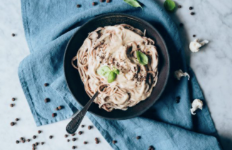Pasta con salsa de coliflor y pimienta de Jamaica
Dificultad: Fácil | Anticáncer: Sí | Celiacos: Sí
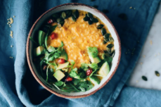Galletas de Avena, Rosa y Lima
Dificultad: Fácil | Anticáncer: Moderado | Celiacos: Sí
Mijo Cremoso con Lentejas, Hortalizas y Shiitake
Dificultad: Media | Anticáncer: Sí | Celiacos: Sí
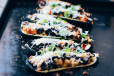Ensalada de Garbanzos con Aguacate y Pepino
Dificultad: Fácil | Anticáncer: Sí | Celiacos: Sí
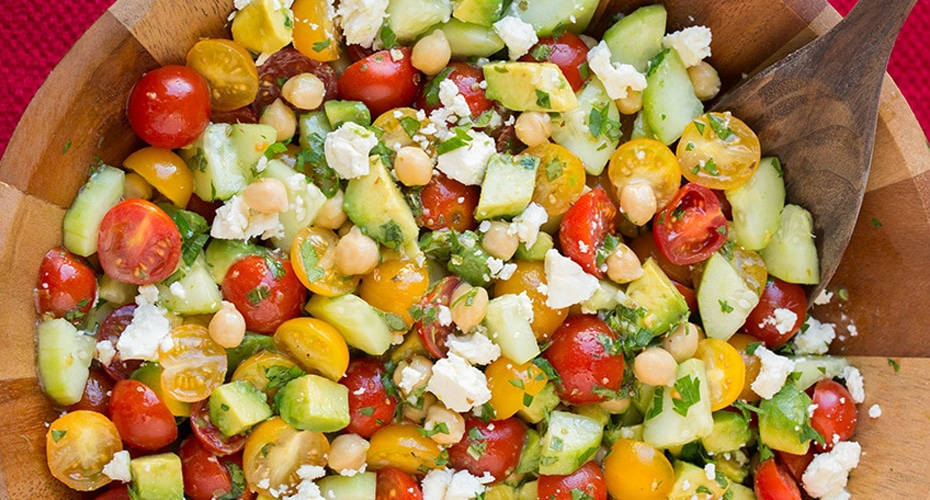Tofu Marinado con Salsa de Soja y Jengibre
Dificultad: Media | Anticáncer: Sí | Celiacos: Sí (con salsa de soja sin gluten)
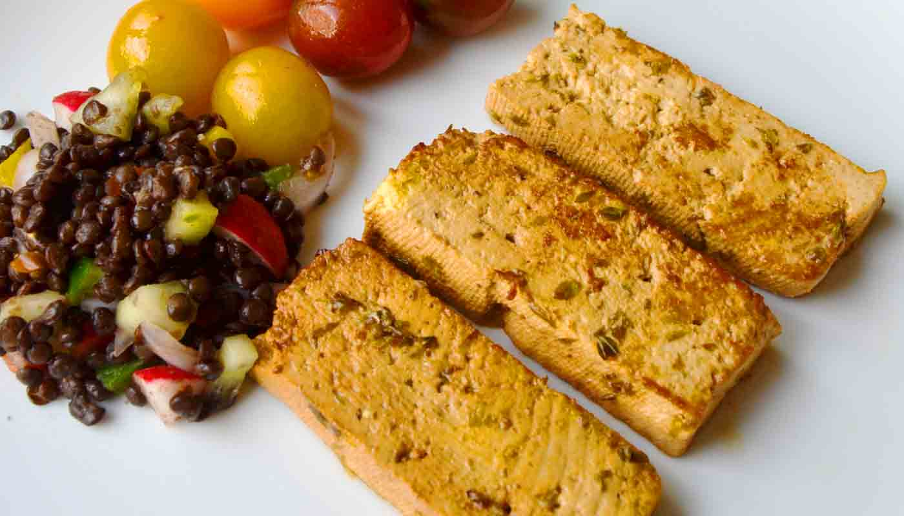Hamburguesa de Lentejas y Avena
Dificultad: Media | Anticáncer: Sí | Celiacos: Sí (si se usa avena sin gluten)
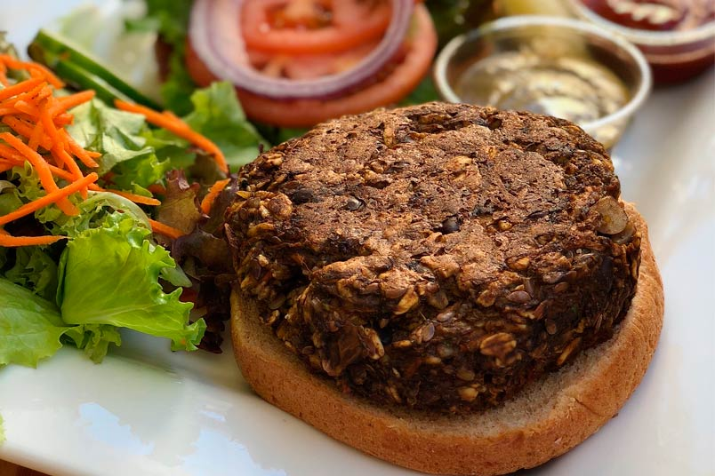Crema de Zanahoria y Jengibre
Dificultad: Fácil | Anticáncer: Sí | Celiacos: Sí
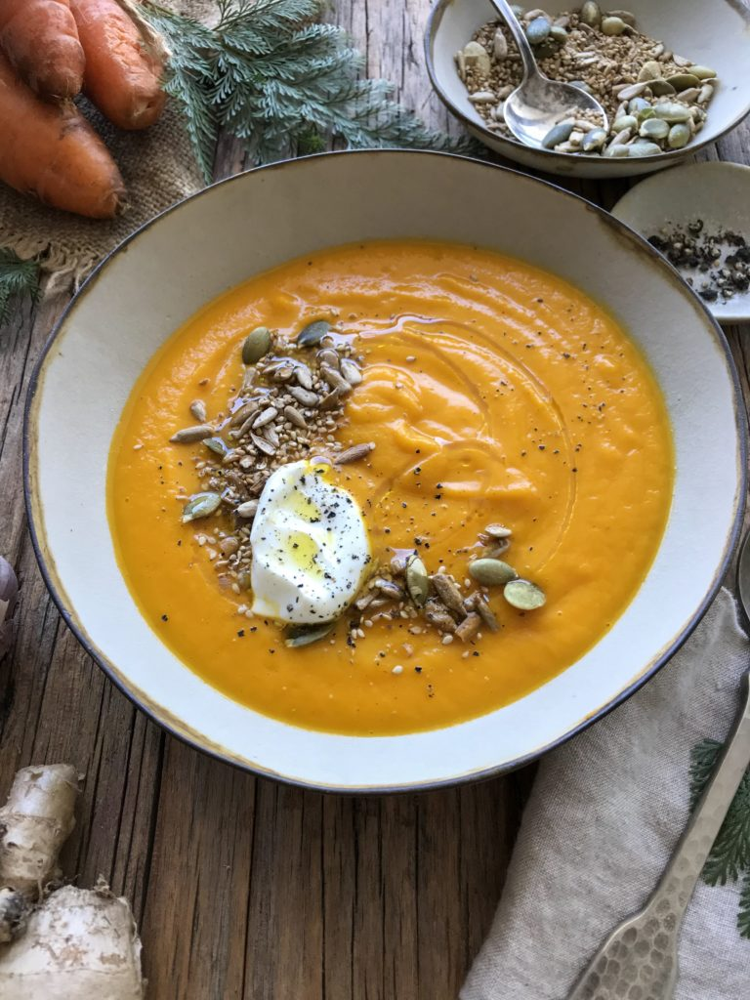Curry de Garbanzos con Leche de Coco
Dificultad: Media | Anticáncer: Sí | Celiacos: Sí
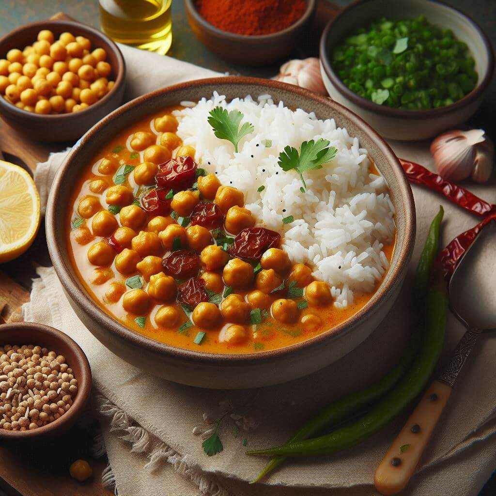Bowl de Quinoa con Vegetales Asados
Dificultad: Fácil | Anticáncer: Sí | Celiacos: Sí
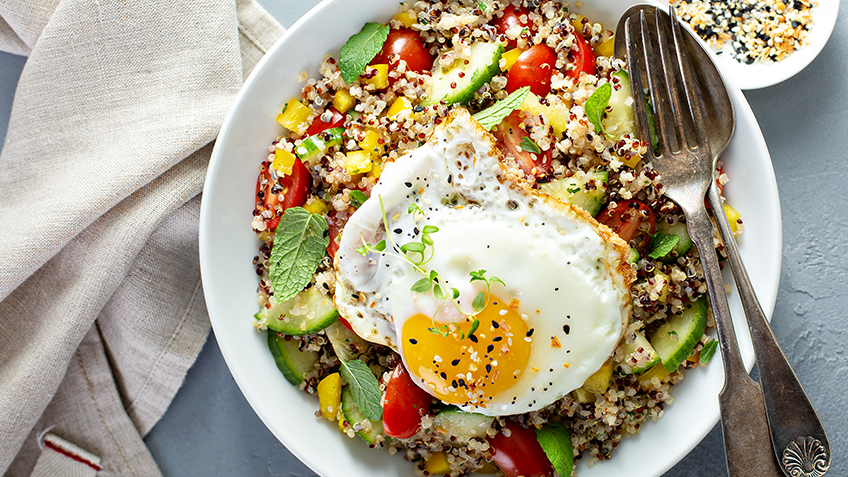Sopa de Tomate y Albahaca
Dificultad: Fácil | Anticáncer: Sí | Celiacos: Sí
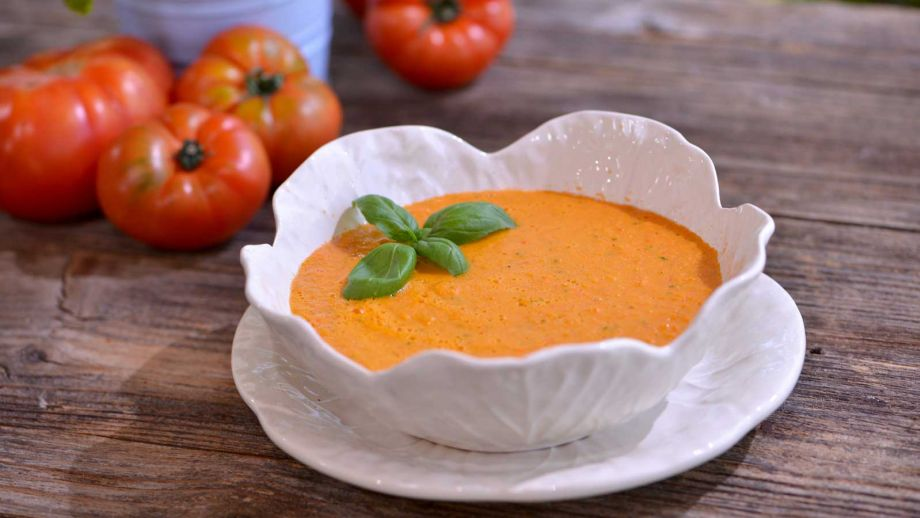Rollitos de Primavera con Verduras y Salsa de Cacahuate
Dificultad: Media | Anticáncer: Moderado | Celiacos: Sí
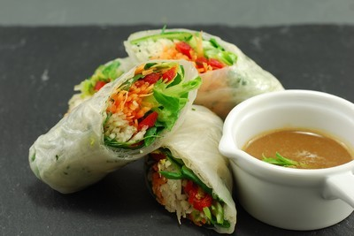Tabulé de Coliflor con Perejil y Menta
Dificultad: Fácil | Anticáncer: Sí | Celiacos: Sí
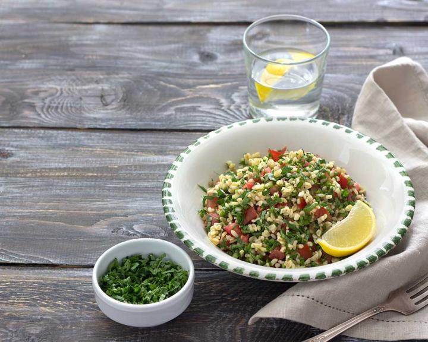Ñoquis de Batata con Salsa de Tomate
Dificultad: Media | Anticáncer: Moderado | Celiacos: Sí (si se usa harina sin gluten)
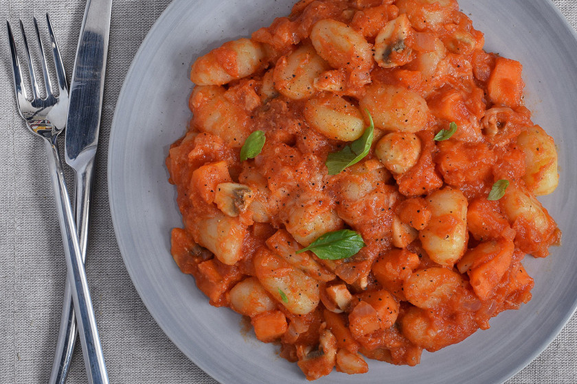Budín de Chía con Frutas del Bosque
Dificultad: Fácil | Anticáncer: Moderado | Celiacos: Sí
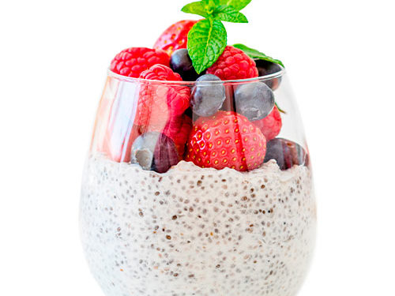